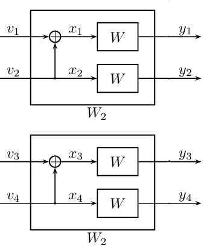
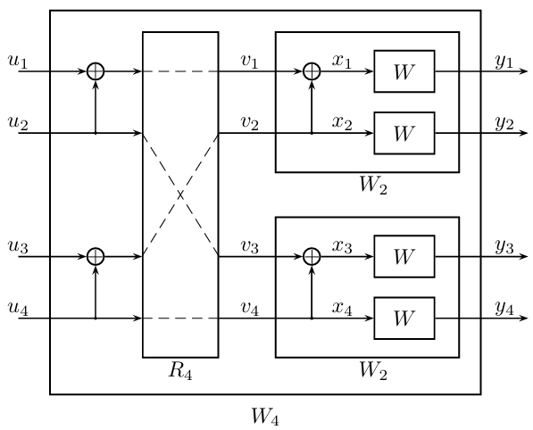

三、如何编码？#
1. 极化码的编码策略#
基本思想：将不可靠信道进行冻结（Frozen），仅在可靠信道上传输信息（Info）。
这只是形象化描述，请勿望文生义。所谓“信道”有复杂的数学表达式，所谓“冻结”也并非废弃，而是使用已知信息进行填充。
冻结集：假设我们现在已经明确了想要的极化码的码长\(N=2^n\)、码率\(R\)，并且经过之前的构造阶段，我们获取到了一个非常关键的信息：各极化信道的可靠度\(\mathcal{H}_0,\ldots,\mathcal{H}_{N-1}\)。那么，定义冻结集\(\mathcal{F}\)是满足如下三个条件的集合：
\(\mathcal{F} \subset \{0, \ldots, N-1\}\)
\(\lvert \mathcal{F} \rvert = \lceil N(1 - R) \rceil\)
\(\forall i \in \mathcal{F}, j \not\in \mathcal{F}, \mathcal{H}_i \leqslant \mathcal{H}_j\)
简单来说，冻结集\(\mathcal{F}\)，就是前\(N(1 - R)\)个最不可靠的信道所对应的索引\(i \in \{0, \ldots, N-1\}\)。在接下来的编码过程中，将不会在这些信道上传输未知消息。
2. 生成矩阵法#
极化码是一种线性码，准确来说，是一种“陪集码”，可以使用生成矩阵进行编码。步骤如下：
构造一个序列\(u_0,\ldots,u_{N-1}\)，其中：
对冻结集部分置\(0\)，也即强制令\(\forall i \in \mathcal{F}: u_i=0\)；
在其余位置上依次填充想要传输的信息比特；
执行矩阵运算得到编码序列\(\vec{x}=\vec{u}\cdot \mathbf{G}_N\)，其中：
\(\mathbf{G}_N=\mathbf{G}_2^{\otimes n}\)，符号\(\otimes n\)表示进行\(n\)次Kronecker积；
\(\mathbf{G}_2=\begin{pmatrix} 1 & 0 \\ 1 & 1 \end{pmatrix}\).
注意上述运算都应当模2！
3. 递归运算法#
根据生成矩阵\(\mathbf{G}_N\)的定义不难知道，其中\(1\)的数量为\(3^n\)，而总元素数量为\(4^n\)，随着码长增加矩阵密度趋于\(0\)。因此除了执行复杂度为\(\mathcal{O}(N^2)\)的矩阵运算之外，应该还存在一种复杂度更低的编码方案，这就是这一小节要介绍的递归运算法。
事实上，递归运算才是极化码真正的编码算法，生成矩阵\(\mathbf{G}_N\)实际上只是递归运算的一种便于描述的等价表示。
3.1 码长为2的极化码#
先考虑码长为\(N=2\)的情况，我们希望输入信道的随机变量\(x_1,x_2\)，是由另外两个随机变量\(u_1,u_2\)经过下图所示的计算过程得到的：

在上图中，显然有\((x_1,x_2) = (u_1,u_2) \cdot \mathbf{G}_2\)。
3.2 码长为4的极化码#
接下来，我们把这个过程拓展到\(N=4\)，继续应用之前的做法，对\(x_1,x_2\)和\(x_3,x_4\)这两对随机变量，我们希望它们是由另外两对随机变量\(v_1,v_2\)和\(v_3,v_4\)经过同样的计算过程得到的，如下图所示：

但如果只做一层构造，我们实际上仍然在使用码长为\(2\)的极化码，这将是非常平凡的拓展。但是我们可以注意到，在第一层构造中，\(v_1\)和\(v_3\)地位相同，\(v_2\)和\(v_4\)地位相同，所以进一步构造中，可以把它们划分到同一组，然后对这两组再进行一层构造：

其中\(v_1,v_3\)是由另一对随机变量\(u_1,u_2\)经过\(\mathbf{G}_2\)计算得到，而\(v_2,v_4\)是由\(u_3,u_4\)得到。
3.3 码长为\(2^n\)的极化码与洗牌置换（Shuffle Permutation）#
在从\(N=2\)拓展到\(N=4\)的过程中，出现了一种分组方式，稍加分析不难发现这是一种类似于扑克牌洗牌的顺序，即将\(\{1,2,\ldots,N\}\)对应到\(\{1, N/2+1, 2, N/2+2, \ldots, N/2, N\}\)。如果将其记作\(R_N\)，那么我们就得到了任意\(N=2^n\)的构造过程：
不难发现这个递归结构共有\(\log{N}\)层，每一层计算复杂度为\(\mathcal{O}(N)\)，因此总计算复杂度为\(\mathcal{O}(N\log{N})\)
4. 比特反转置换#
如果你真正动手实现了递归编码算法，那么会发现，对于输入的序列\(u_{1:N}\)，编码结果\(x_{1:N} \neq u_{1:N} \cdot \mathbf{G}_N\)。这是因为，递归编码和生成矩阵编码之间，相差了一个在蝶形变换计算结构（如离散傅里叶变换）中经常出现的置换顺序，被称为比特反转置换（Bit-Reversal Permutation）。
比特反转置换：将一个给定的索引\(i\in\{0,1,\ldots,2^n-1\}\)，表示为\(n\)位比特形式，然后将这\(n\)位比特进行首尾颠倒，从而得到新的索引。
举例：码长为\(2^4=16\)，索引\(i=7=(0111)_2\)，将其首尾颠倒得到\(i'=(1110)_2=14\)。
代码示例：
import plcoding
import numpy as np
from matplotlib import pyplot as plt
# 设定码长为N=2^n
n = 5; N = (1 << n)
# 随机生成一个序列
u = np.random.choice(a=2, p=(0.5, 0.5), size=(N,))
# 使用生成矩阵法进行编码
GN = plcoding.kron_power(np.array([[1, 0], [1, 1]]), n)
x1 = np.mod(np.matmul(u, GN), 2)
# 简单展示一下极化码的生成矩阵，非常漂亮
plt.imshow(GN)
plt.show()

# 使用递归计算法
x2 = np.copy(u)
tmp = np.empty_like(u)
# 从左向右计算，层数增加，分组大小减半
W_size = N
while W_size > 1:
# 两两进行极化变换
for i in range(0, N, 2):
tmp[i] = (x2[i] + x2[i + 1]) % 2
tmp[i + 1] = x2[i + 1]
# 组内执行洗牌置换
for offset in range(0, N, W_size):
for i in range(int(W_size / 2)):
x2[offset + i] = tmp[offset + 2 * i]
x2[offset + int(W_size / 2) + i] = tmp[offset + 2 * i + 1]
W_size = int(W_size / 2)
# 直接对比它们是不同的
(x1 == x2).all()
False
# 需要经过比特反转排序，才会得到相同的结果
perm = plcoding.bitrev_perm(N)
(x1[perm] == x2).all()
True